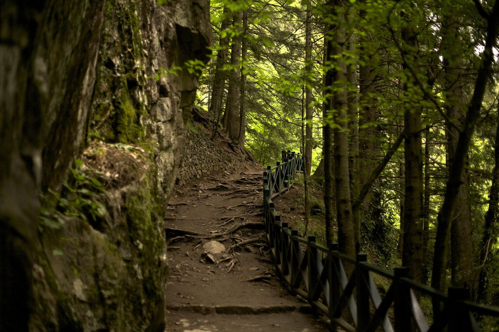
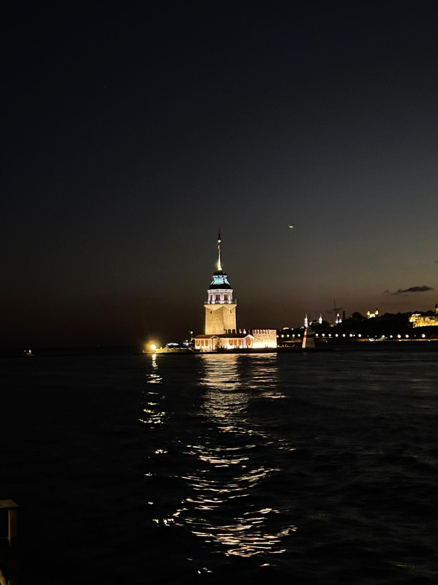
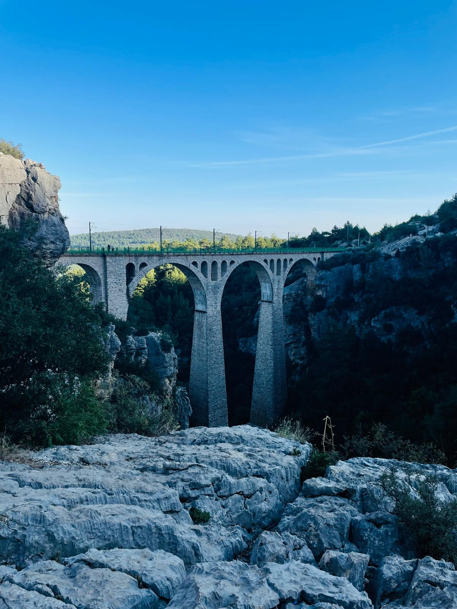

Muhammet Ali Alçı
Sakarya Üniversitesi — Bilgisayar Mühendisliği
Trabzon doğumluyum, Karadeniz'in enerjisini ve Trabzonspor aşkını içimde taşıyorum. Sakarya Üniversitesi'nde Bilgisayar Mühendisliği okurken bir yandan kod yazıyor, bir yandan fotoğraf makinemi elimden bırakmıyor, bir yandan da kitapların arasında kayboluyorum.
Hobiler & Etkinlikler




Hakkımda
Trabzon'un dağları ve denizi arasında 2006 yılında dünyaya geldim.Birkaç yıl Trabzonda yaşadıktan sonra Gaziantep'e taşındık. Gaziantepte bulunduğum sürece çok kişiyle tanıştım ve unutamayacağım dostluklar edindim ve tam olarak 7 sene Mehmet Görmez İmam Hatip lisesinde eğitim gördüm. okulda aldığım eğitim hem karakterimi hem de bakış açımı şekillendirdi. Gaziantep'te geçirdiğim dönem ise bana farklı bir kültürü, farklı bir hayatı tattırdı. Ailem şu an Kocaeli'nde yaşıyor, ben de Sakarya Üniversitesi'nde Bilgisayar Mühendisliği okuyorum.
Üniversite hayatım yazılıma olan tutkumu daha da alevlendirdi. Kod yazmak benim için sadece bir beceri değil, bir düşünme biçimi. Boş zamanlarımda fotoğraf çekiyor, kitap okuyor, müzikle ruhumu dinlendiriyorum. Hayatın her anında, her şehirde, her insanda öğrenilecek bir şey olduğuna inanıyorum.